Наши преподаватели
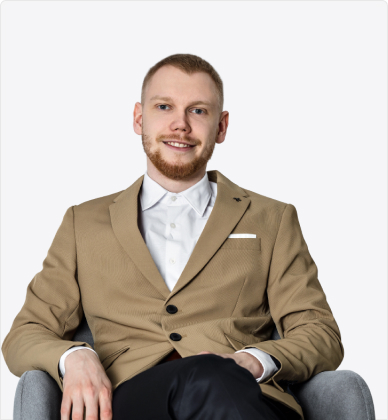
Евгений Коваленко Основатель крупнейшего канала
по инвестированию в «Телеграме»
по инвестированию в «Телеграме»
Частный инвестор и основатель движения «Лимон на чай»
Автор одного из самых крупных телеграм-каналов по теме инвестирования
С 2017 года делится своим личным опытом и пишет только о том, что сам протестировал и получил результаты
Автор экономического романа «Лимон на чай» Организовал 5 обучающих курсов по инвестированию. 300 выпускников
Автор одного из самых крупных телеграм-каналов по теме инвестирования
С 2017 года делится своим личным опытом и пишет только о том, что сам протестировал и получил результаты
Автор экономического романа «Лимон на чай» Организовал 5 обучающих курсов по инвестированию. 300 выпускников
Подробнее
Евгений Коваленко Приглашенный эксперт на занятие по IPO
Образование: Высшая Школа Экономики, Финансы и Фондовые рынки
Частный инвестор, основной фокус: акции на американском и российском фондовом рынке
На фондовом рынке с 2016 года, средняя доходность 25% годовых без плечей и производных финансовых инструментов
Основатель проекта Long Term Investments в VK и Telegram
Автор статей в Тинькофф.Журнале и других ресурсах про инвестиции
Частный инвестор, основной фокус: акции на американском и российском фондовом рынке
На фондовом рынке с 2016 года, средняя доходность 25% годовых без плечей и производных финансовых инструментов
Основатель проекта Long Term Investments в VK и Telegram
Автор статей в Тинькофф.Журнале и других ресурсах про инвестиции
Подробнее
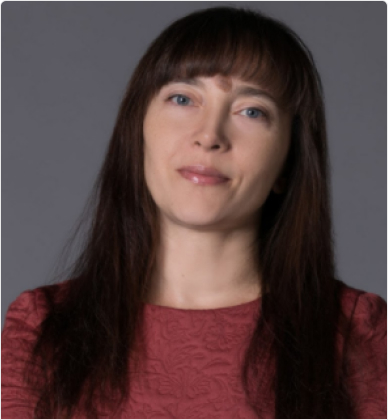
Татьяна Суфиянова Приглашенный эксперт на занятие по налогам
России и Украины
России и Украины
Квалификационный аттестат консультанта
по налогам и сборам Московский Налоговый Институт (МНИ)
Ведущий специалист Российского налогового портала
Главный бухгалтер производственной компании Автор статей в области налогообложения
Ведущий специалист Российского налогового портала
Главный бухгалтер производственной компании Автор статей в области налогообложения
Подробнее
Сергей Наумов Приглашенный эксперт на курс по ETF
Частный инвестор, финансист
Преподаватель и автор статей и учебных курсов об инвестировании
Автор блога «Инвестирование в ETF»
Преподаватель и автор статей и учебных курсов об инвестировании
Автор блога «Инвестирование в ETF»
Подробнее
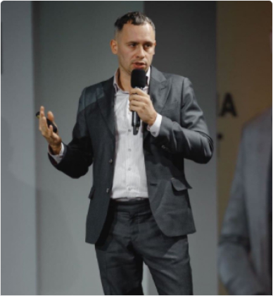
Александр Грановский Приглашенный эксперт на занятие
«Инвестирование в Украине»
«Инвестирование в Украине»
Практикующий инвестор на фондовом рынке Украины и США
11-летний опыт в сфере финансового и инвестиционного бизнеса
Преподаватель вуза по направлению «Биржевая деятельность и электронный бизнес»
11-летний опыт в сфере финансового и инвестиционного бизнеса
Преподаватель вуза по направлению «Биржевая деятельность и электронный бизнес»
Подробнее
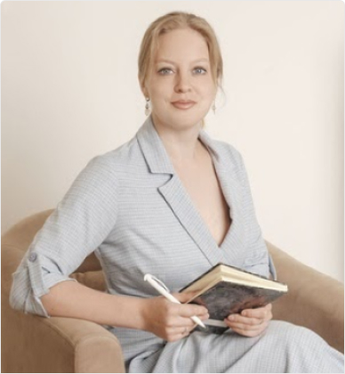
Анастасия Щербенева Приглашенный эксперт на занятие
«Инвестирование в Казахстане»
«Инвестирование в Казахстане»
Получила два высших образование
Закончила Хельсинкский университет и Удмуртский государственный университет исторического факультета специализации «международные отношения»
Предприниматель, инвестор и автор You-Tube канала «Стало понятно»
Закончила Хельсинкский университет и Удмуртский государственный университет исторического факультета специализации «международные отношения»
Предприниматель, инвестор и автор You-Tube канала «Стало понятно»
Подробнее
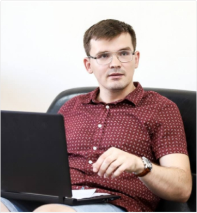
Дмитрий Наривончик Приглашенный эксперт на занятие
«Инвестирование в Беларуси»
«Инвестирование в Беларуси»
Частный инвестор, автор telegram-канала «Нетрудовые доходы»
Опыт инвестиций с 2009 г.
Текущий портфель: 47,4% - белорусские ценные бумаги
Опыт инвестиций с 2009 г.
Текущий портфель: 47,4% - белорусские ценные бумаги
Подробнее
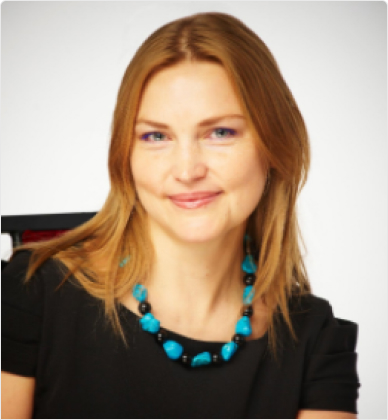
Наталья Янцен Приглашенный эксперт на занятие
по налогам Казахстана
по налогам Казахстана
Руководитель тренинг-центра для бухгалтеров ТОО «Yantsen Company»
Руководитель ОО «Формирование налоговой культуры», Внутренний аудитор IFA
Международный бухгалтер IAB, МВА
Международного Мичиганского Университета Налоговый консультант, тренер по налогам с 2001 г.
Руководитель ОО «Формирование налоговой культуры», Внутренний аудитор IFA
Международный бухгалтер IAB, МВА
Международного Мичиганского Университета Налоговый консультант, тренер по налогам с 2001 г.
Подробнее
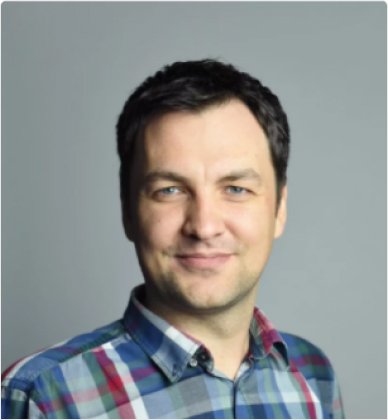
Сергей Трухачев Приглашенный эксперт на занятие
«Инвестирование в США»
«Инвестирование в США»
Инвестор, IT-инженер, Резидент Кремниевой долины, автор YouTube-канала «The Инвестор»
Подробнее
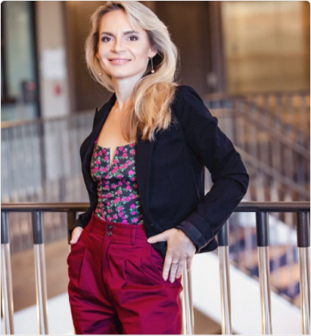
Наталья Федосова Приглашенный эксперт на занятие по налогам
для резидентов Америки
для резидентов Америки
10 лет опыта работы в государственных и коммерческих организациях Киева экономистом
8 лет опыта работы с Американскими налогами. Работает в Американской компании Guilmartin, DiPiro and Sokolowski LLC
Имеет Лицензию Enrolled Agent from IRS – имеет право представлять интересы клиентов по налогам в Налоговой и в суде
8 лет опыта работы с Американскими налогами. Работает в Американской компании Guilmartin, DiPiro and Sokolowski LLC
Имеет Лицензию Enrolled Agent from IRS – имеет право представлять интересы клиентов по налогам в Налоговой и в суде
Подробнее
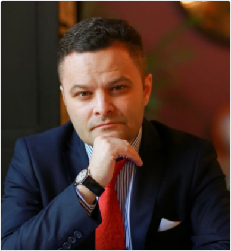
Игорь Файнман Приглашенный эксперт на занятие по налогам
для резидентов Беларуси и по обзору брокеров
Европы
для резидентов Беларуси и по обзору брокеров
Европы
Закончил Финансовый университет при правительстве РФ
Имеет степень МВА (Израиль)
Возглавляет «Академию Финансов и биржи» Является волонтером финансового просвещения Банка России, лектором общества «Знание»
Имеет степень МВА (Израиль)
Возглавляет «Академию Финансов и биржи» Является волонтером финансового просвещения Банка России, лектором общества «Знание»
Подробнее
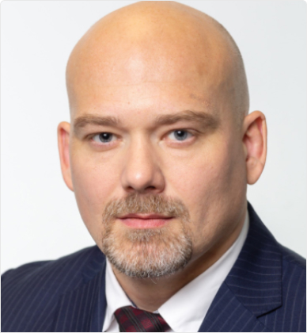
Ярослав Кабаков Постоянный лектор
по двухступенчатому курсу
по двухступенчатому курсу
Ведущий эксперт в области монетарной политики ЦБ и фундаментального анализа
Практический опыт в сфере финансов и оценке активов более 15 лет
Заместитель генерального директора АО "Инвестиционная компания «ФИНАМ»
Работал аналитиком в консалтинговой компании «Юникон», структурах «Газпрома» агрохимическом холдинге «Акрон»
Возглавлял компании нефтегазового и телекоммуникационного секторов, кэн
Практический опыт в сфере финансов и оценке активов более 15 лет
Заместитель генерального директора АО "Инвестиционная компания «ФИНАМ»
Работал аналитиком в консалтинговой компании «Юникон», структурах «Газпрома» агрохимическом холдинге «Акрон»
Возглавлял компании нефтегазового и телекоммуникационного секторов, кэн
Подробнее
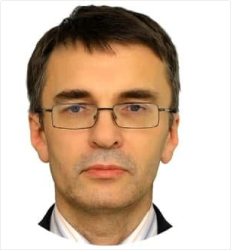
Олег Харитонов Постоянный лектор по техническому анализу
двухступенчатого курса
двухступенчатого курса
Практикующий трейдер. Занимается инвестициями с 1998г.
С 2002г. торгует на бирже. Опыт работы на рынках России и США
С 2006г. по 2015г. работал в компаниях Атон и БКС
Автор статей в газетах, журналах и на сайтах про финансы и инвестиции
С 2002г. торгует на бирже. Опыт работы на рынках России и США
С 2006г. по 2015г. работал в компаниях Атон и БКС
Автор статей в газетах, журналах и на сайтах про финансы и инвестиции
Подробнее
Олег Абелев Постоянный лектор по фундаментальному
анализу двухступенчатого курса
анализу двухступенчатого курса
Кандидат экономических наук
Постоянный колумнист в ряде экономических СМИ (Forbes, finam.ru, energy-experts.ru и др.) Постоянный участник теле и радиоэфиров (РБК, Бизнес-ФМ)
Ведущий школы Финансовой грамотности Grafin Преподаватель Всероссийской Академии Внешней Торговли при Минэкономразвития РФ.
Постоянный колумнист в ряде экономических СМИ (Forbes, finam.ru, energy-experts.ru и др.) Постоянный участник теле и радиоэфиров (РБК, Бизнес-ФМ)
Ведущий школы Финансовой грамотности Grafin Преподаватель Всероссийской Академии Внешней Торговли при Минэкономразвития РФ.
Подробнее
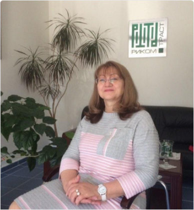
Фатима Нибо Постоянный лектор по техническому анализу\
двухступенчатого курса
двухступенчатого курса
Опыт работы в реальном секторе экономики – 25 лет. Главный бухгалтер, финансовый директор
ОАО "Туапсинский морской торговый порт"
С 2008 года по настоящее время – руководитель представительства АО "ИК "РИКОМ-ТРАСТ" в г. Туапсе
Опыт индивидуальной работы на фондовом, валютном рынках – с 2000 года, на срочном рынке – с 2015 года
В феврале 2006 года присвоено почетное звание – Заслуженный экономист Кубани
С 2008 года по настоящее время – руководитель представительства АО "ИК "РИКОМ-ТРАСТ" в г. Туапсе
Опыт индивидуальной работы на фондовом, валютном рынках – с 2000 года, на срочном рынке – с 2015 года
В феврале 2006 года присвоено почетное звание – Заслуженный экономист Кубани
Подробнее